YUSUKE IKEDA / SUPPORT
YOUR SUPPORT.
OUR POWER.
その応援が、次の一周につながる。
SUPPORT YUSUKE IKEDA
走るための力を、
ともに。
サーキットに立つまでには、たくさんの準備があります。マシンの整備、タイヤ、燃料、エントリー、そして遠征。
レースを見に来ること。SNSで走りを追うこと。活動を支援すること。それぞれの応援が、走り続ける力になります。
支援について問い合わせる
WHERE YOUR SUPPORT GOES
一周を支えるもの。
-
01
タイヤ
路面とマシンをつなぐ、走りの要。
-
02
燃料
練習から決勝まで、走行を支える。
-
03
エントリー
全日本のスタートラインに立つために。
-
04
遠征
サーキットへの移動と、現地での活動。
-
05
整備
一つひとつの部品を、確かな状態へ。
-
06
レース活動
継続して走り、経験を重ねるために。
LET’S TALK.
つながることから、
はじめよう。
スポンサー・取材・活動についてのお問い合わせはこちら。